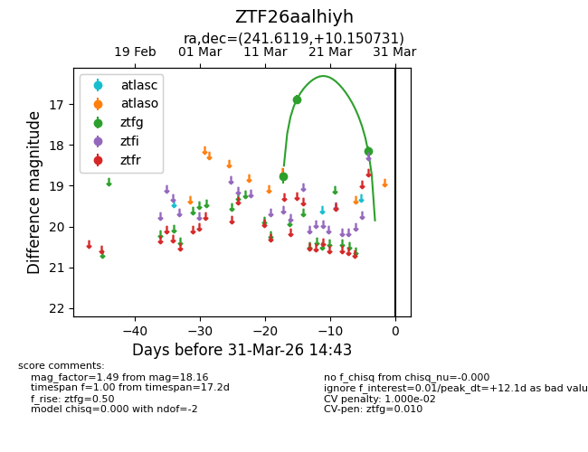
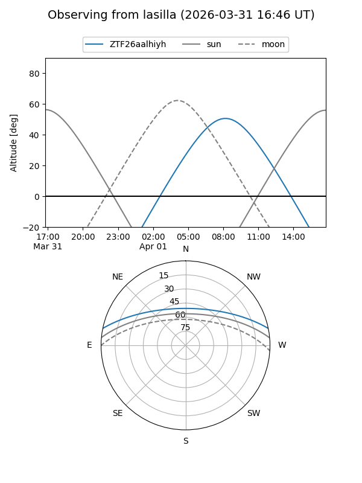
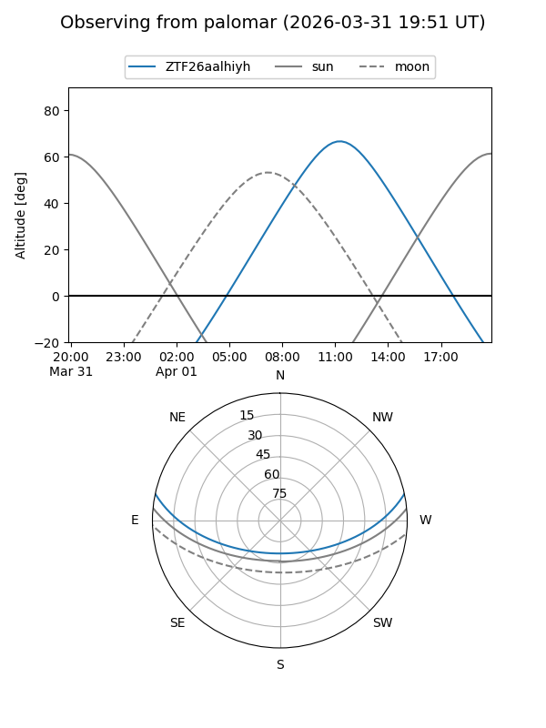
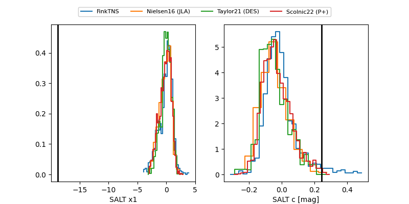

ZTF26aalhiyh
Target ZTF26aalhiyh at 2026-03-31 14:45
Aliases and brokers:
FINK: link
Lasair: link
ALeRCE: link
alt names
ZTF26aalhiyh (ztf,fink_ztf)
Coordinates:
equatorial (ra, dec) = 241.6119,+10.15073
equatorial (HMS+DMS) = 16:06:26.85,+10:09:02.63
galactic (l, b) = (22.2889,+41.14442)
Flags:
likely cv
Photometry:
last ztfg=18.16
3 ztfg detections
Lightcurve

Visibility


Additional plots
